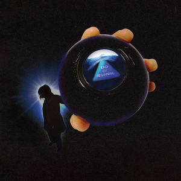

" End of Beginning " è una canzone dell'attore e musicista americano Joe Keery , con il suo nome d'arte Djo. È stata resa disponibile per la prima volta da AWAL il 16 settembre 2022, come sesta traccia del suo secondo album in studio, Decide . La canzone ha iniziato a guadagnare popolarità su TikTok nel 2024; di conseguenza, è stata pubblicata come singolo il 1 marzo 2024.

La canzone ha conosciuto una seconda ondata di popolarità nel gennaio 2026, in seguito all'episodio finale della serie Stranger Things , in cui Keery interpreta il personaggio di Steve Harrington . Ha raggiunto la vetta delle classifiche in Repubblica Ceca, Grecia, Indonesia, Italia, Lettonia, Lituania, Slovacchia, Svezia e Regno Unito, e si è posizionata tra le prime dieci in oltre 25 altri paesi, tra cui Australia, Belgio (Fiandre), Canada, Germania, Irlanda, Nuova Zelanda e Stati Uniti.